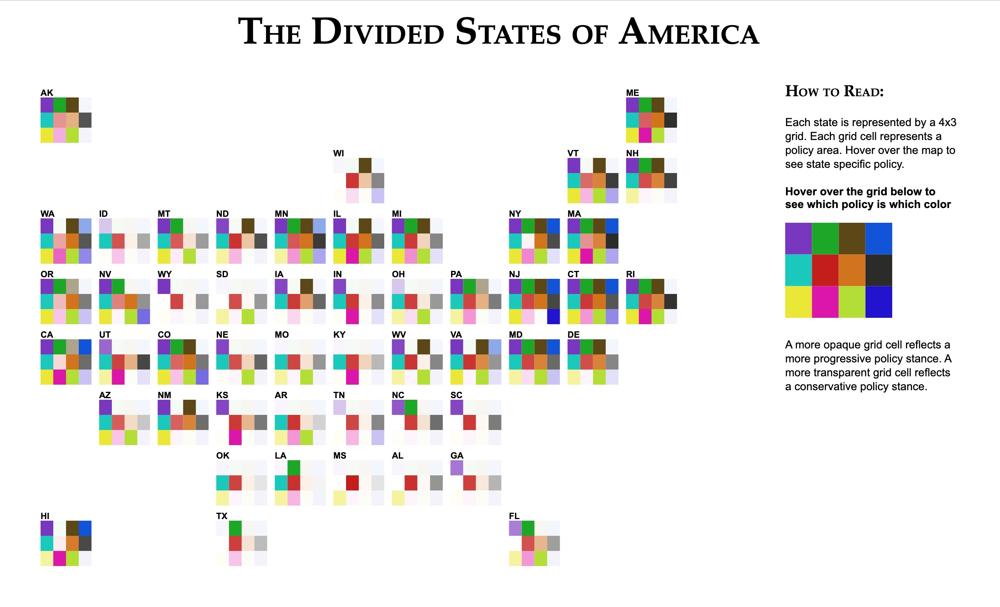
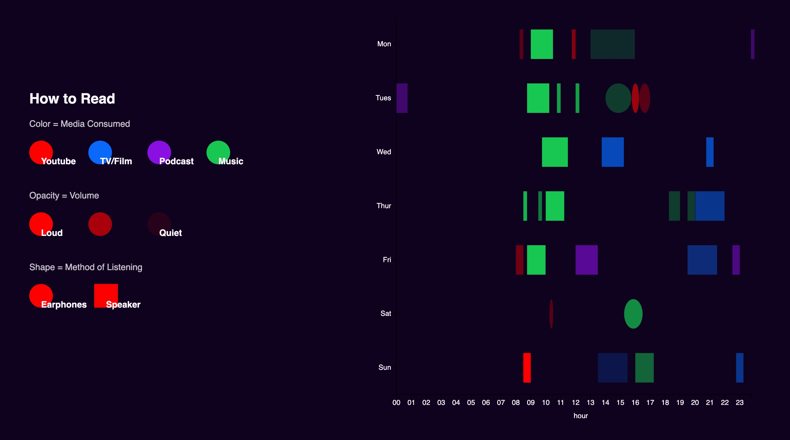
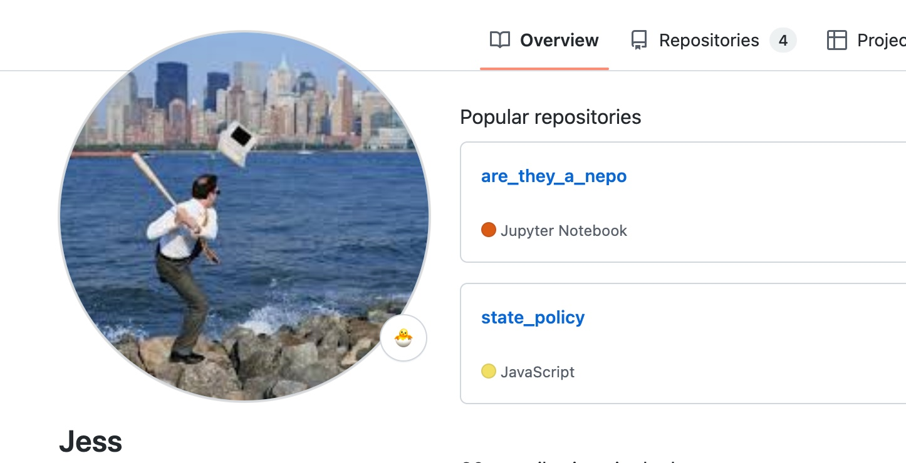
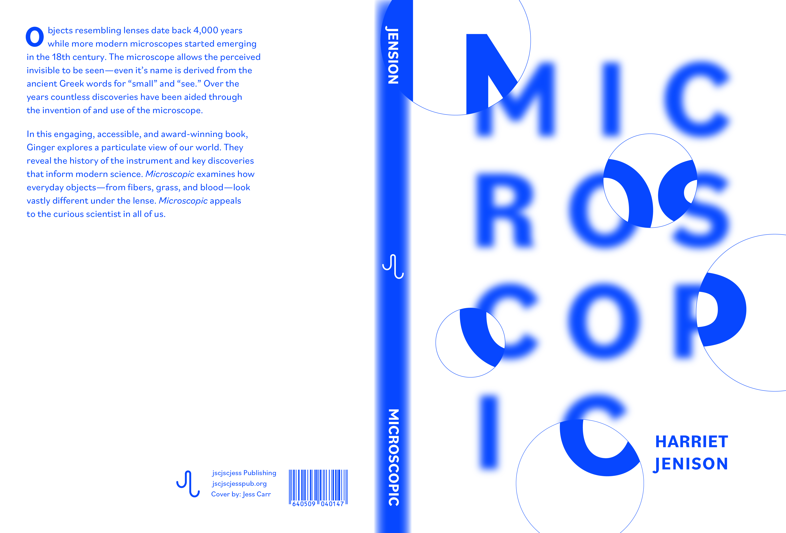

i am currently a student of environmental science and graphic design at northeastern university,
with an interest in data analysis and viz. i have experience data wrangling in R, python, and SQL and often turn to adobe illustrator, tableau, (and most recently) d3.js to visualize data.
recent data viz projects include
this state policy map

and
this diary

of my weekly listening habits. both were created in an effort to learn d3.js... feedback welcome :)
you can find my coding projects on
github,

design ones on
behance,

or just go stalk me on
linkedin instead.